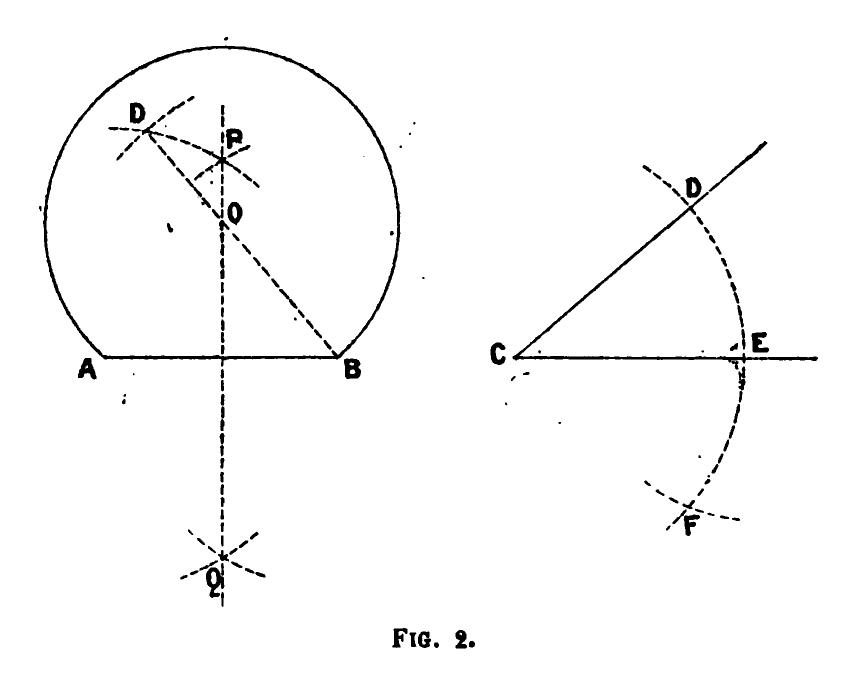

Problem XXVIII: Circular Segment Capable of a Given Angle¶
Émile Lemoine — La Géométrographie (English Translation, p. 16, fols. 0032)
Problem XXVIII (Euclid III.33 — Describe Upon Given Segment :g:`AB` a Circular Segment Capable of Given Angle :g:`C` = :math:`angle DCE`). Classical textbooks copy angle \(\angle DCE\) at A to draw the tangent to the sought circle, erect a perpendicular to that tangent at A, draw the perpendicular bisector of AB, and finally trace the arc—requiring three straight lines and a high circle count.
On folio 0032 (p. 16, FIG. 2), Lemoine eliminates the tangent line completely by observing that the inscribed angle \(\angle ABD\) subtended on circle AAB equals \(90^\circ - \alpha\) when arc BD equals \(2\alpha\)—so the single chord BD directly intersects the perpendicular bisector PQ of AB at the exact center O!
Sweep AAB and BAB (\(3C_1 + 2C_3\)) meeting at P and Q, and draw the perpendicular bisector PQ (\(2R_1 + R_2\)).
Retaining the exact same radius \(AB\), sweep CAB (\(C_1 + C_3\)) centered at the vertex of the given angle \(\angle DCE\), cutting its arms at Dang and E.
Capture chord \(DE\) and double it across E onto CAB at F (\(3C_1 + C_3\)), giving the doubled chord \(DF\) subtending \(2\angle DCE\).
Transfer chord \(DF\) from B onto AAB at D (\(3C_1 + C_3\)) and draw BD (\(2R_1 + R_2\)) meeting PQ at the exact center O!
Sweep the capable arc OOA (\(2C_1 + C_3\)) over AB:

